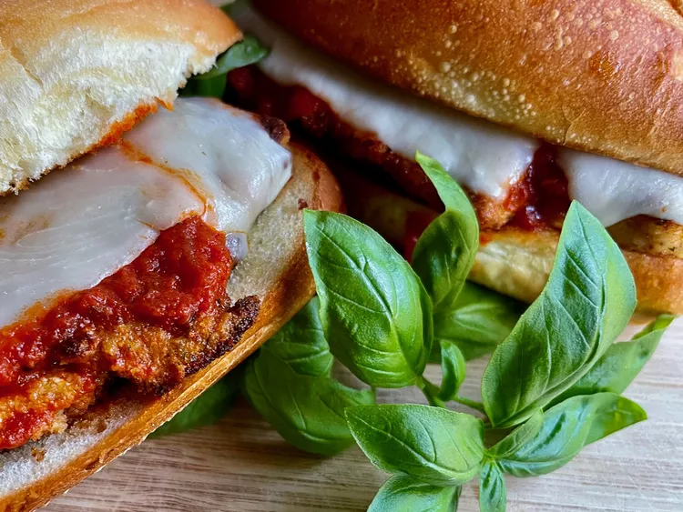

Chicken Parm Sub Recipe

Description
In the time it takes to pick up take out and bring it home, you can have warm chicken Parmesan sandwiches ready for your family to enjoy. Serve with a green salad.
Ingredients
- Cooking Spray
- 4 frozen Chicken Breast Filets
- 1/2 cup freshly grated Parmesan Cheese
- 16 ounce package of Frozen Garlic Bread, thawed
- 1 cup of Tomato Sauce
- 4 slices of Provolone Cheese
- 12 fresh Basil Leaves
- Aluminum Foil
Steps
- Preheat the oven to 425 degrees F (220 degrees C). Spray a baking pan with vegetable oil spray.
- Place frozen chicken fillets on the prepared pan and bake for 10 to 12 minutes. Turn chicken, sprinkle 2 tablespoons Parmesan cheese on each fillet, and bake until crispy, an additional 10 to 12 minutes.
- Slice garlic bread into 4 equal portions. Open each portion and place garlic side up on a baking sheet. Warm garlic bread in the oven about 5 minutes.
- To assemble the sandwiches, place a chicken fillet on a piece of garlic bread, spoon 1/4 cup tomato sauce or marinara sauce on top of the chicken, and lay a slice of provolone on top of the sauce. Place 3 basil leaves, or more to taste, on each sandwich, and top with the other half.
- Wrap each sandwich in foil and return to the oven until the cheese is melted, 5 to 8 minutes. Unwrap and serve warm.